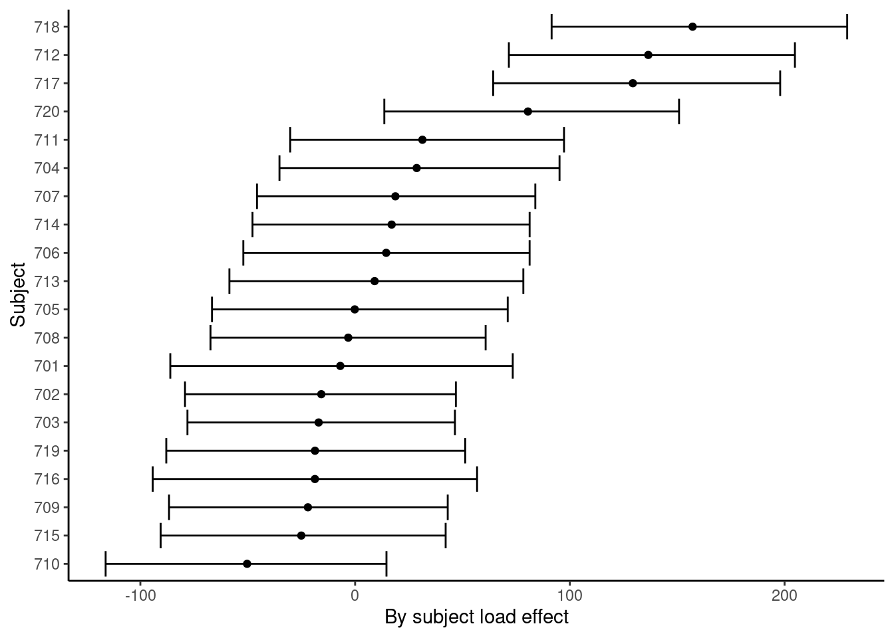
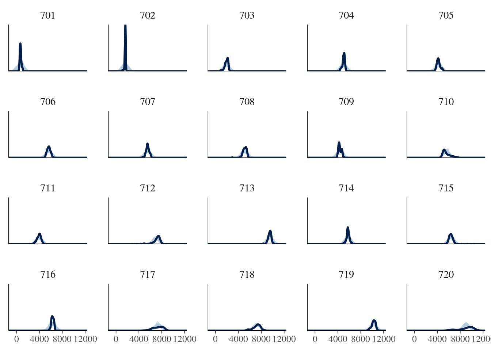
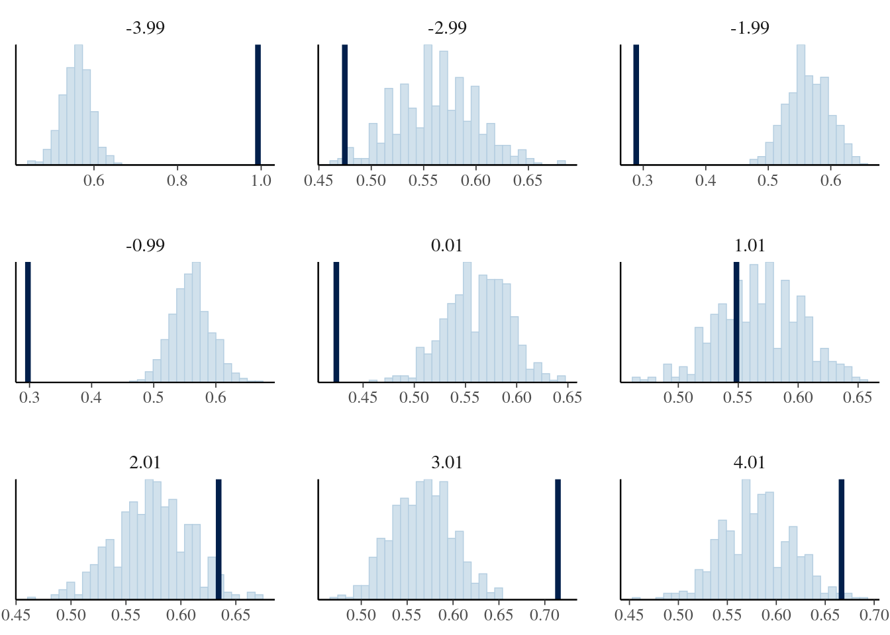
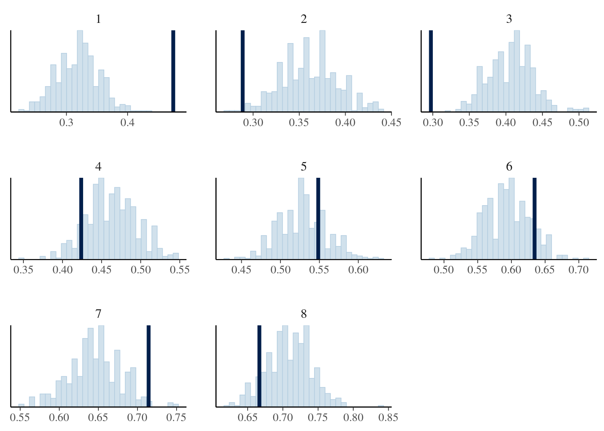

head(df_pupil_complete) |> gt()| subj | trial | load | p_size |
|---|---|---|---|
| 701 | 1 | 2 | 1021.4086 |
| 701 | 2 | 1 | 951.4349 |
| 701 | 3 | 5 | 1063.9569 |
| 701 | 4 | 4 | 913.4871 |
| 701 | 5 | 0 | 602.6868 |
| 701 | 6 | 3 | 826.2199 |
As in section 4.1, we focus on the effect of cognitive load on pupil size, but this time we look at all the subjects of Wahn et al. (2016):
head(df_pupil_complete) |> gt()| subj | trial | load | p_size |
|---|---|---|---|
| 701 | 1 | 2 | 1021.4086 |
| 701 | 2 | 1 | 951.4349 |
| 701 | 3 | 5 | 1063.9569 |
| 701 | 4 | 4 | 913.4871 |
| 701 | 5 | 0 | 602.6868 |
| 701 | 6 | 3 | 826.2199 |
You should be able to now fit a “maximal” model (correlated varying intercept and slopes for subjects) assuming a normal likelihood. Base your priors in the priors discussed in section 4.1.
| Term | Estimate | Est.Error | Q2.5 | Q97.5 |
|---|---|---|---|---|
| b_Intercept | 2,473.58 | 504.44 | 1,473.17 | 3,420.74 |
| b_c_load | 39.39 | 23.51 | −7.84 | 82.56 |
TODO


We begin with a classic question from the psycholinguistics literature: Are subject relatives easier to process than object relatives? The data come from Experiment 1 in a paper by Grodner and Gibson (2005).
Scientific question: Is there a subject relative advantage in reading?
Grodner and Gibson (2005) investigate an old claim in psycholinguistics that object relative clause (ORC) sentences are more difficult to process than subject relative clause (SRC) sentences. One explanation for this predicted difference is that the distance between the relative clause verb (sent in the example below) and the head noun phrase of the relative clause (reporter in the example below) is longer in ORC vs. SRC. Examples are shown below. The relative clause is shown in square brackets.
(1a) The reporter [who the photographer sent to the editor] was hoping for a good story. (ORC) (1b) The reporter [who sent the photographer to the editor] was hoping for a good story. (SRC)
The underlying explanation has to do with memory processes: Shorter linguistic dependencies are easier to process due to either reduced interference or decay, or both. For implemented computational models that spell this point out, see Lewis and Vasishth (2005) and Engelmann, Jäger, and Vasishth (2020).
In the Grodner and Gibson data, the dependent measure is reading time at the relative clause verb, (e.g., sent) of different sentences with either ORC or SRC. The dependent variable is in milliseconds and was measured in a self-paced reading task. Self-paced reading is a task where subjects read a sentence or a short text word-by-word or phrase-by-phrase, pressing a button to get each word or phrase displayed; the preceding word disappears every time the button is pressed. In 6.1, we provide a more detailed explanation of this experimental method.
For this experiment, we are expecting longer reading times at the relative clause verbs of ORC sentences in comparison to the relative clause verb of SRC sentences.
head(df_gg05_rc) |> gt()| subj | item | condition | RT | residRT | qcorrect | experiment |
|---|---|---|---|---|---|---|
| 1 | 1 | objgap | 320 | -21.39 | 0 | tedrg3 |
| 1 | 2 | subjgap | 424 | 74.66 | 1 | tedrg2 |
| 1 | 3 | objgap | 309 | -40.34 | 0 | tedrg3 |
| 1 | 4 | subjgap | 274 | -91.24 | 1 | tedrg2 |
| 1 | 5 | objgap | 333 | -8.39 | 1 | tedrg3 |
| 1 | 6 | subjgap | 266 | -87.32 | 1 | tedrg2 |
You should use a sum coding for the predictors. Here, object relative clauses (“objgaps”) are coded \(+1\), subject relative clauses \(−1\).
df_gg05_rc <- df_gg05_rc |>
mutate(c_cond = if_else(condition == "objgap", 1, -1))You should be able to now fit a “maximal” model (correlated varying intercept and slopes for subjects and for items) assuming a log-normal likelihood.
c_cond) on reading times RT (\(\beta\)).| Term | Estimate | Est.Error | Q2.5 | Q97.5 |
|---|---|---|---|---|
| b_c_cond | 0.01 | 0.01 | −0.01 | 0.03 |
| mean | Q2.5 | Q97.5 |
|---|---|---|
| 6.63 | −5.69 | 19.59 |
TODO
Load the following two data sets:
data("df_gibsonwu")
data("df_gibsonwu2")The data are taken from two experiments that investigate (inter alia) the effect of relative clause type on reading time in Chinese. The data are from Gibson and Wu (2013) and Vasishth et al. (2013) respectively. The second data set is a direct replication attempt of the Gibson and Wu (2013) experiment.
Chinese relative clauses are interesting theoretically because they are prenominal: the relative clause appears before the head noun. For example, the English relative clauses shown above would appear in the following order in Mandarin. The square brackets mark the relative clause, and REL refers to the Chinese equivalent of the English relative pronoun who.
(2a) [The photographer sent to the editor] REL the reporter was hoping for a good story. (ORC) (2b) [sent the photographer to the editor] REL the reporter who was hoping for a good story. (SRC)
As discussed in Gibson and Wu (2013), the consequence of Chinese relative clauses being prenominal is that the distance between the verb in relative clause and the head noun is larger in subject relatives than object relatives. Hsiao and Gibson (2003) were the first to suggest that the larger distance in subject relatives leads to longer reading time at the head noun. Under this view, the prediction is that subject relatives are harder to process than object relatives. If this is true, this is interesting and surprising because in most other languages that have been studied, subject relatives are easier to process than object relatives; so Chinese will be a very unusual exception cross-linguistically.
The data provided are for the critical region (the head noun; here, reporter). The experiment method is self-paced reading, so we have reading times in milliseconds. The second data set is a direct replication attempt of the first data set, which is from Gibson and Wu (2013).
The research hypothesis is whether the difference in reading times between object and subject relative clauses is negative. For the first data set (df_gibsonwu), investigate this question by fitting two “maximal” hierarchical models (correlated varying intercept and slopes for subjects and items). The dependent variable in both models is the raw reading time in milliseconds. The first model should use the normal likelihood in the model; the second model should use the log-normal likelihood. In both models, use \(\pm 0.5\) sum coding to model the effect of relative clause type. You will need to decide on appropriate priors for the various parameters.
Plot the posterior predictive distributions from the two models. What is the difference in the posterior predictive distributions of the two models; and why is there a difference?
Examine the posterior distributions of the effect estimates (in milliseconds) in the two models. Why are these different?
Given the posterior predictive distributions you plotted above, why is the log-normal likelihood model better for carrying out inference and hypothesis testing?
Next, work out a normal approximation of the log-normal model’s posterior distribution for the relative clause effect that you obtained from the above data analysis. Then use that normal approximation as an informative prior for the slope parameter when fitting a hierarchical model to the second data set. This is an example of incrementally building up knowledge by successively using a previous study’s posterior as a prior for the next study; this is essentially equivalent to pooling both data sets (check that pooling the data and using a Normal(0,1) prior for the effect of interest, with a log-normal likelihood, gives you approximately the same posterior as the informative-prior model fit above).
TODO
head(df_dillonE1) |> gt()| subj | item | rt | int | expt |
|---|---|---|---|---|
| dillonE11 | dillonE119 | 2918 | low | dillonE1 |
| dillonE11 | dillonE119 | 1338 | low | dillonE1 |
| dillonE11 | dillonE119 | 424 | low | dillonE1 |
| dillonE11 | dillonE119 | 186 | low | dillonE1 |
| dillonE11 | dillonE119 | 195 | low | dillonE1 |
| dillonE11 | dillonE119 | 1218 | low | dillonE1 |
The data are taken from an experiment that investigate (inter alia) the effect of number similarity between a noun and the auxiliary verb in sentences like the following. There are two levels to a factor called Int(erference): low and high.
(3a) low: The key to the cabinet are on the table (3b) high: The key to the cabinets are on the table
Here, in (3b), the auxiliary verb are is predicted to be read faster than in (3a), because the plural marking on the noun cabinets leads the reader to think that the sentence is grammatical. (Both sentences are ungrammatical.) This phenomenon, where the high condition is read faster than the low condition, is called agreement attraction.
The data provided are for the critical region (the auxiliary verb are). The experiment method is eye-tracking; we have total reading times in milliseconds.
The research question is whether the difference in reading times between high and low conditions is negative.
First, using a log-normal likelihood, fit a hierarchical model with correlated varying intercept and slopes for subjects and items. You will need to decide on the priors for the model.
By simply looking at the posterior distribution of the slope parameter \(\beta\), what would you conclude about the theoretical claim relating to agreement attraction?
TODO
The attentional blink (AB; first described by Raymond, Shapiro, and Arnell 1992; though it has been noticed before e.g., Broadbent and Broadbent 1987) refers to a temporary reduction in the accuracy of detecting a probe (e.g., a letter “X”) presented closely after a target that has been detected (e.g., a white letter). We will focus on the experimental condition of Experiment 2 of Raymond, Shapiro, and Arnell (1992). Subjects are presented with letters in rapid serial visual presentation (RSVP) at the center of the screen at a constant rate and are required to identify the only white letter (target) in the stream of black letters, and then to report whether the letter X (probe) occurred in the subsequent letter stream. The AB is defined as having occurred when the target is reported correctly but the report of the probe is inaccurate at a short lag or target-probe interval.
The data set df_ab is a subset of the data of this paradigm from a replication conducted by Grassi et al. (2021). In this subset, the probe was always present and the target was correctly identified. We want to find out how the lag affects the accuracy of the identification of the probe.
head(df_ab) |> gt()| subj | probe_correct | trial | lag |
|---|---|---|---|
| 1 | 0 | 2 | 5 |
| 1 | 1 | 4 | 4 |
| 1 | 1 | 8 | 6 |
| 1 | 0 | 14 | 5 |
| 1 | 0 | 15 | 2 |
| 1 | 0 | 18 | 8 |
Fit a logistic regression assuming a linear relationship between lag and accuracy (probe_correct). Assume a hierarchical structure with correlated varying intercept and slopes for subjects. You will need to decide on the priors for this model.
| Estimate | Est.Error | Q2.5 | Q97.5 | |
|---|---|---|---|---|
| b_Intercept | 0.29 | 0.16 | 0.00 | 0.62 |
| b_c_lag | 0.01 | 0.02 | −0.04 | 0.06 |
| lag | c_lag | prob |
|---|---|---|
| 0.00 | −3.99 | 0.56 |
| 1.00 | −2.99 | 0.56 |
| 2.00 | −1.99 | 0.57 |
| 3.00 | −0.99 | 0.57 |
| 4.00 | 0.01 | 0.57 |
| 5.00 | 1.01 | 0.58 |
| 6.00 | 2.01 | 0.58 |
| 7.00 | 3.01 | 0.58 |
| 8.00 | 4.01 | 0.58 |

